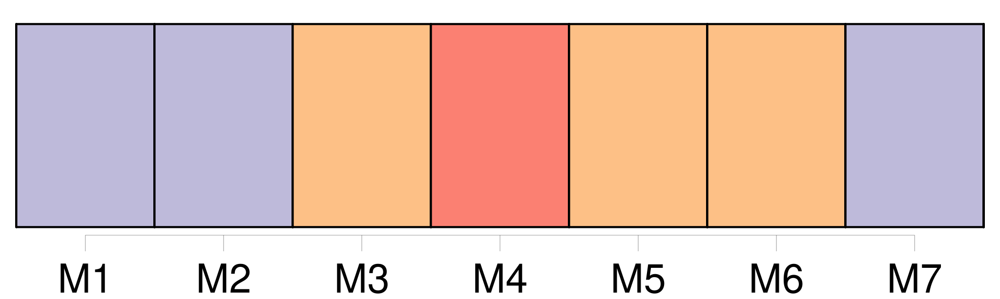
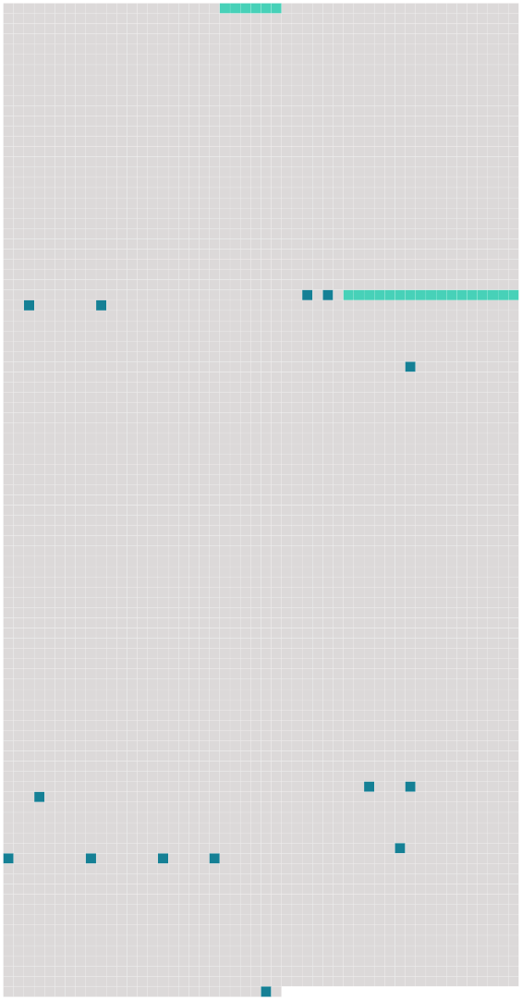

Longueur nb maillons : 16 mentions |
  |
Il voulut faire des tours d'équilibre avec une queue de billard et deux boules d'ivoire, comme en exécutait [Barberou, un de ses amis] [75 phrases] Pour lui être agréable, Bouvard voulut faire à Pécuchet la connaissance de [Barberou] [C'] était [un ancien commis voyageur, actuellement boursier, très bon enfant, patriote, ami des dames] , et [qui] affectait le langage faubourien. Pécuchet [le] trouva déplaisant et il conduisit Bouvard chez Dumouchel. [16 phrases] Grâce à [Barberou] , ils pénétrèrent dans les coulisses d'un petit théâtre. [123 phrases]
[Barberou] les sauva. [Il] connaissait leur rêve, et un beau jour vint leur dire qu'on [lui] avait parlé d'un domaine, à Chavignolles, entre Caen et Falaise. [14 phrases] [Barberou] se montra plus sensible en recevant l'adieu de Bouvard.
[Il] abandonna exprès une partie de dominos, [promit] d'aller le voir là-bas, [commanda] deux anisettes et l' [embrassa] [24 phrases] Bouvard n'avait quitté Paris que le surlendemain, pour dîner encore une fois avec [Barberou] |
 |
La ressource peut être téléchargée sur la page Ortolang
Si vous avez des questions ou vous voyez des erreurs, merci d'envoyer un mail à silvia.federzoni89@gmail.com
Site développé par S. Federzoni (contact)